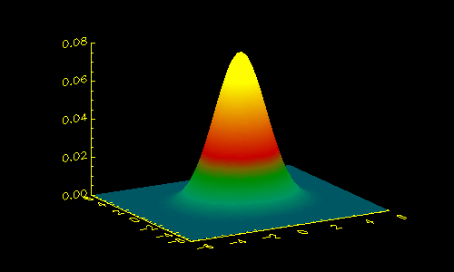
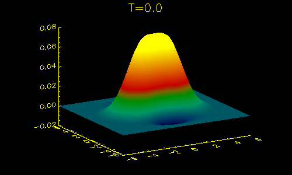
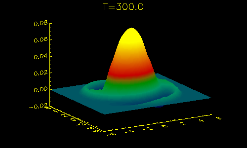
We are studying the long time decay of a Lamb vortex monopole in a two-dimensional,
incompressible flow when perturbed by small to moderate disturbances. A
Lamb monopole is an axisymmetric vortex with a Gaussian radial profile.
The very first image on this page is a Lamb monopole.
The equation describing this vorticity field in polar coordinates is .
Fundamentally, wc hope to understand the evolution and morphology of generic
vortex monopoles. Right now, our research program focuses on Gaussian monopoles
because in the lack of external flows, all monopoles relax to Gaussian
monopoles. The questions we are trying to answer are:
Using high-Reynolds number asymptotics, we have some intuition about the decay of perturbed, Gaussian monopoles. Under the assumption that the perturbations are so small that the perturbations do not interact with themselves but only with the unperturbed Gaussian monopole, we have found that perturbations are supposed to decay much more quickly than one might expect.
This linear analysis predicts that the perturbation will relax very quickly when the perturbation is very small. For infinitesimal perturbations, vorticity is similar to a passive scalar. In monopole structures with shear (like the Gaussian monopole) nonaxisymmetric perturbations are sheared out, creating sharp gradients, and homogenized through viscous diffusion. This is called the shear-diffusion mechanism.
When studying very small perturbations, the simulation agrees with the
linear theory. But, for strong perturbations, we see very different behavior.
Initially, the perturbation is azimuthal two-periodic and exponentially
decaying. Green-yellow represents positive vorticity, and blue-purple represents
negative vorticity.
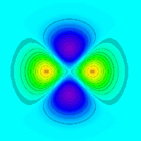
Perturbation initial conditions at T=0.0.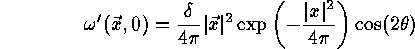
.To perform these experiments, we simulate the Navier-Stokes equations
at a high Reynolds number:
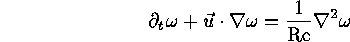
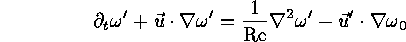
Over time, this radially homogeneous distribution is sheared out by
the base flow as we would expect. In fact, regardless of the amplitude
of the initial perturbation, the relaxation rate remains approximately
the same. We measure the relaxation toward an axisymmetric object by computing
its nonaxisymmetric enstrophy . This is definited to be the square
of the nonaxisymmetric part of the vorticity field integrated over the
entire domain. Here is what we found:
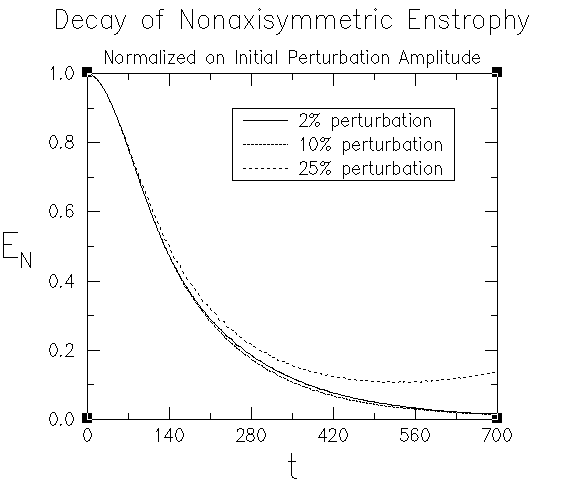
In the following images, the pictures on the left correspond to computations
of the linearized vorticity dynamics equations. (That is, the perturbation
does not interact with itself.) On the right, the images are taken from
a simulation of the full nonlinear vorticity dynamics equations when d=0.25.
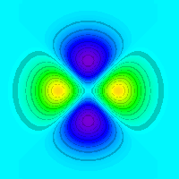
T=0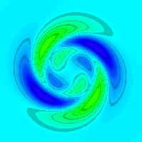
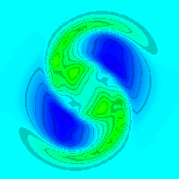
T=200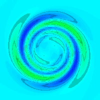
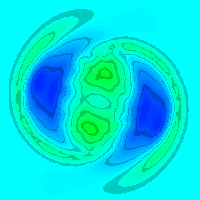
T=400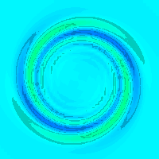
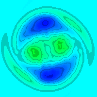
T=600Of course, the image above only shows the perturbation without the base
vorticity from the stronger monopole which drives the flow. The total initial
vorticity field really looks like this: 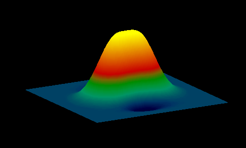
Click on the picture to watch a movie of the total vorticity field evolution.
Again you will see that the disturbed monopole rapidly relaxes. However,
the final state does not look like a Guassian monopole. It is a steadily
rotating, asymmetric object called a tripole. Presently, we are
revising our understanding of monopole decay. We know that weak perturbations
to Gaussian monopoles relax rapidly to Gaussian monopoles. Now, we have
found that moderate perturbations to Gaussian monopoles will rapidly relax
through the shear diffusion mechanism, but not necessarily to a Gaussian
monopole. We have found at least one new intermediate state. Now, we
must try to characterize these other states and understand where and how
shear/diffusion is negated.
We have submitted these results to the letter section of the Physics of Fluids. If you would like a gnu-zipped postscript copy, feel free to download it or request a copy.
We would like to thank the National Science Foundation for supporting this research project and the Pittsburgh Supercomputing Center for supplying the computational resources necessary for these computations.
 LF-Rossi@nwu.edu
LF-Rossi@nwu.edu